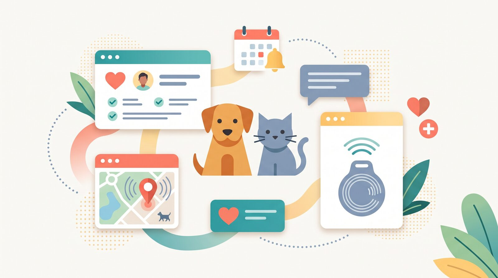

PetLink: aplikacija za brigu o ljubimcima koju sam napravio i testirao od početka do kraja
Zašto sam napravio PetLink, Android aplikaciju za vlasnike pasa i mačaka, kako su Gemini i Claude pisali i pregledali njen React Native i Supabase kod, i šta me naučilo testiranje sopstvenog proizvoda.
Dane provodim lomeći tuđi softver. Ovog puta sam objavio svoj: PetLink je sada dostupan na Google Play-u.

Svaki vlasnik psa ili mačke zna kako to ide. Knjižica vakcinacije je negdje u fioci, datum tretmana protiv parazita živi u tvojoj glavi, a kad ljubimac nestane, jedini alati su Facebook grupe i papirni plakati. PetLink sve to stavlja na jedno mjesto: zdravstveni karton, podsjetnike, upozorenja za nestale ljubimce, udomljavanje i savjete za njegu. Besplatan je, nema reklama i radi na srpskom, hrvatskom, bosanskom i engleskom.
👉 Preuzmi PetLink na Google Play-u · Stranica proizvoda
Šta PetLink radi
- Digitalni e-Karton. Profil za svakog ljubimca sa rasom, datumom rođenja, brojem mikročipa, vakcinama, zaštitom od parazita i istorijom bolesti. Dokumenti od veterinara se otpremaju i čuvaju uz profil, vidljivi samo vlasniku.
- Pametni podsjetnici. Aplikacija izračuna kad je na redu sljedeća vakcina ili tretman protiv parazita, obavijesti te prije nego što istekne i može da doda datum u kalendar telefona. Tu je i planer obaveza sa zadacima koji se ponavljaju.
- Pet Alert. Prijavi nestalog ljubimca jednim dodirom. Korisnici u krugu od 10 km dobijaju push obavještenje, upozorenje se pojavljuje na zajedničkoj mapi, a svako može da prijavi da je vidio ljubimca, pozove ili pošalje poruku vlasniku. Svako upozorenje ima svoj grupni čet, a aplikacija pravi plakat za štampu sa fotografijom ljubimca i QR kodom.
- NFC pametna ogrlica. Upiši profil ljubimca na NFC tag na ogrlici. Ko god pronađe ljubimca, prisloni telefon na tag i dobije link da te kontaktira. Na samom tagu nema ličnih podataka.
- Udomljavanje. Pregledaj oglase za pse i mačke uz filtere, objavi svoj oglas, piši vlasnicima i prijavi neprimjerene oglase.
- Love Match. Pronađi partnera za parenje u blizini, provjeri podatke o rasi i zdravlju i dopisuj se kad se poklopite.
- AI čet. Pitaj o ishrani, ponašanju, njezi ili simptomima i dobij odgovore prilagođene vrsti, rasi, starosti i polu tvog ljubimca. To je pomoćnik, ne veterinar, i aplikacija to jasno kaže. Pet pitanja dnevno je besplatno.
Kako je napravljen
Ideja za PetLink je moja, kao i provjera: odluka šta svaka funkcionalnost treba da radi i testiranje da li to zaista radi. Većina koda je napisana uz pomoć AI-ja. Za generisanje koda sam koristio Gemini i Claude, a oni su pregledali kod jedan drugome: ono što je jedan napisao, drugi je provjeravao na bugove, propuštene edge case-ove i nekonzistentnosti sa ostatkom aplikacije. Drugi model koji čita kod uhvati stvari za koje je prvi slijep, ali nijedan od njih ne odlučuje kad je nešto gotovo. Taj dio je ostao na meni.
Tehnologija ispod toga:
- React Native za mobilnu aplikaciju. Jedna JavaScript/TypeScript baza koda za cijelu aplikaciju, iste komponente na svim ekranima i otvorena vrata za iOS verziju bez prepisivanja. Nativne funkcije poput NFC-a, push obavještenja, lokacije, kamere i sinhronizacije sa kalendarom povezane su preko React Native modula.
- Supabase za backend. Supabase pokriva prijavu (email, Google i Apple), PostgreSQL bazu sa profilima ljubimaca, zdravstvenim kartonima, upozorenjima i oglasima za udomljavanje, kao i skladište za fotografije i veterinarske dokumente. Kad je sve u jednom servisu, manje je koda koji samo spaja dijelove i manje mjesta gdje nešto može da pukne.
- DeepSeek model iza AI četa. AI čet u aplikaciji radi na DeepSeek modelu istreniranom za pitanja o brizi za ljubimce. Svako pitanje se šalje zajedno sa vrstom, rasom, starošću i polom ljubimca, tako da odgovor odgovara baš tvojoj životinji, a ne nekom opštem savjetu, a kad simptomi zvuče ozbiljno, upućuje korisnika veterinaru.
Više o radu sa AI-jem na kodu sam pisao u članku Kako sam gradio PetLink: dva AI modela koji pišu i pregledaju kod jedan drugome.
Pravljenje iz ugla QA inženjera
Kad praviš proizvod, drugačije gledaš na kvalitet. Na poslu dobijem funkcionalnost, specifikaciju i rok. Na PetLink-u sam ja bio i osoba koja odlučuje šta znači "gotovo". Nekoliko stvari se izdvojilo:
- Rizik odlučuje gdje idu testovi. Pogrešan datum na podsjetniku je neprijatan. Pet Alert koji ne stigne ni do koga u blizini je pravi promašaj. Tokovi lokacije, obavještenja i upozorenja dobili su najviše vremena za testiranje, uključujući loš GPS, odbijene dozvole i telefone koji su bili uspavani ili offline.
- Pravi uređaji su bolji od emulatora. NFC, push obavještenja i kamera se iskreno ponašaju samo na fizičkim telefonima, pa su te funkcije testirane na pravim Android uređajima, ne samo u emulatoru.
- Četiri jezika znače četiri puta više grešaka u rasporedu. Tekstovi na srpskom, hrvatskom i bosanskom su duži od engleskih, i tekst koji staje na engleskom može da bude odsječen na bosanskom. Svaki ekran je provjeren na svakom jeziku i u tamnom režimu.
- Privatnost je takođe test slučaj. Zdravstveni kartoni su podrazumijevano privatni, NFC tag čuva samo link, korisnici mogu da blokiraju druge korisnike, a nalog može trajno da se obriše iz same aplikacije. Svaku od tih stvari sam tretirao kao zahtjev sa sopstvenim provjerama, a ne kao fusnotu u politici privatnosti.
- AI odgovorima trebaju zaštitne ograde. Asistenta sam testirao kao što na poslu testiram LLM-ove: skup stvarnih pitanja vlasnika, provjerenih na tačnost, ton i to da li korisnika šalje veterinaru kad simptomi zvuče ozbiljno.
Šta sam naučio
- Obim je najteži bug. Svaka ideja za funkcionalnost zvuči malo dok ne napišeš test slučajeve za nju. Pisanje kriterijuma prihvatanja unaprijed je spriječilo da PetLink raste unedogled.
- Prvi korisnici nađu bugove koje tvoji testovi nisu zamislili. Prvi testeri su koristili aplikaciju na načine koje nikad nisam planirao, i te povratne informacije su oblikovale izdanje više od bilo koje liste provjera.
- I stranica u prodavnici zaslužuje QA. Snimci ekrana, opisi, prevodi i obrazac o bezbjednosti podataka su dio proizvoda. Korisnici ih vide prije nego što vide ijedan ekran.
Šta slijedi
PetLink je danas na Android-u, a React Native baza koda drži iOS verziju nadohvat ruke. Ako imaš psa ili mačku, volio bih da ga probaš i kažeš mi šta se pokvarilo. To mi je najdraža vrsta povratne informacije.
👉 Preuzmi PetLink na Google Play-u
Pitanja, ideje ili prijave bugova: markolosic1993@gmail.com.